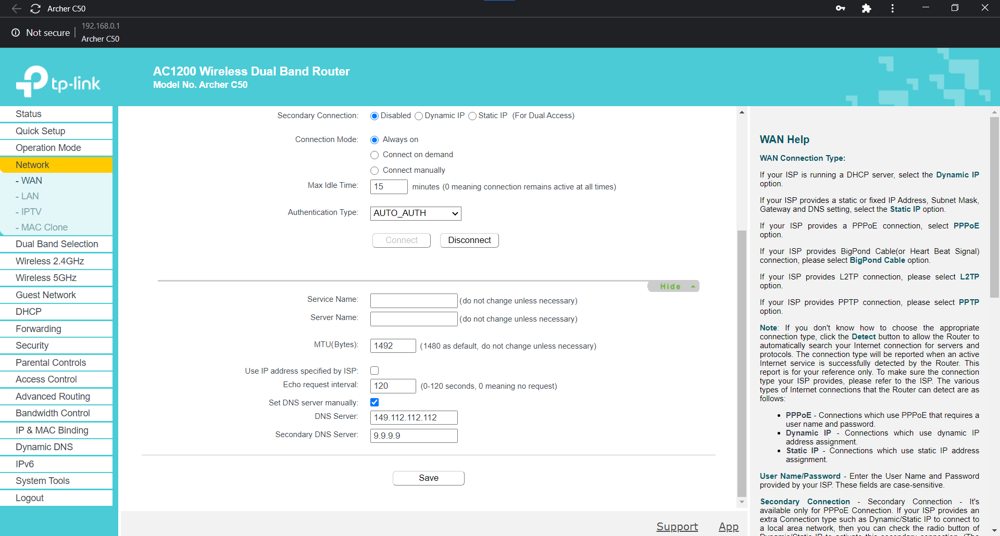
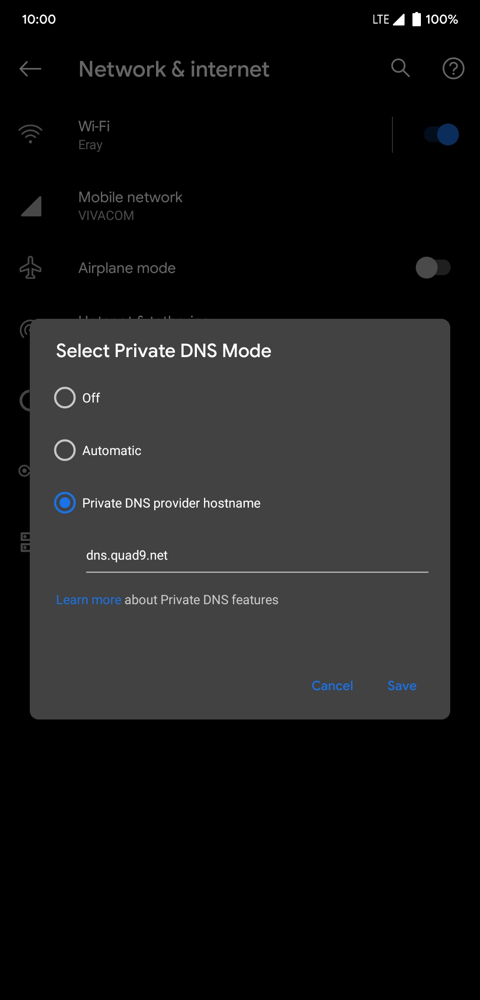
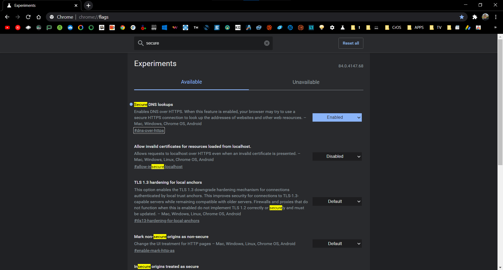

Top free, secure, and speedy DNS services for home users tested and the reason you should use one
Publishing date: June 25, 2020
Well, I have no expertise in this topic, but for starters, we must know what DNS stands for and how it impacts our web surfing and online privacy.
Simply put, the internet runs on IP addresses - 216.58.214.206, perhaps, is for Google.com. Test it by typing it into your address bar.
 Sure enough, remembering those is such a hassle, right? That's the reason we need a "phonebook" for the internet in the name of a Domain Name Service, referred as DNS from now on, to translate website domains into IPs.
Most internet service providers (ISPs) have each of their own DNS servers, and potentially they can snoop on which sites their clients visit. The introduction of DNS-over-TLS and DNS-over-HTTPS types of traffic encryption has paved the way for a more secure internet.
Sure enough, remembering those is such a hassle, right? That's the reason we need a "phonebook" for the internet in the name of a Domain Name Service, referred as DNS from now on, to translate website domains into IPs.
Most internet service providers (ISPs) have each of their own DNS servers, and potentially they can snoop on which sites their clients visit. The introduction of DNS-over-TLS and DNS-over-HTTPS types of traffic encryption has paved the way for a more secure internet.
User privacy
DNS-over-TLS (DoT) and DNS-over-HTTPS (DoH) are still sorta new, though they have major importance in having privacy in-check when browsing the internet with the use of modern encryption standards. Unless you are running a secure DNS of the aforementioned types, the website addresses you visit can easily be tracked by your current internet service provider, and anyone in-between.
Speed
It's not strictly about speed, but rather latency, aka, the exact time to establish a connection with a remote server. The use of a crappy Domain Name Service can significantly bog down your latency, which in most situations can hurt competitive online gameplays, though, it's not limited to.
My first choice
Primary: 9.9.9.9
Secondary: 149.112.112.112
DoT: dns.quad9.net
Quad9 DNS is being run by a US-based non-profit organization and because they can't monetize their product, Quad9 relies solely on donations and is funded by IBM. Their policy strictly states that no user data collection gets recorder, or stored, for that matter. They have over a hundred partner servers over the world to give you the best latency (lower is always better) to the end user.
Quad9 Privacy Policy
Alternatives
Primary: 1.1.1.1
Secondary: 1.0.0.1
DoT: 1dot1dot1dot1.cloudflare-dns.com
Primary: 8.8.8.8
Secondary: 8.8.4.4
DoT: dns.google
In case you don't trust big names such as Google and Cloudflare because they openly declare their practices at collecting logs and certain types of personal data for debugging reasons, yet, they may still easily outperform at latency Quad9 in select regions of the world due to having larger network infrastructures.
Configuration
The most straightforward way is to set up your preferred DNS directly through your router. Depending on your router maker, model, and firmware revision, the settings GUIs significantly vary. Make sure to scour through each and every option until you see the DNS server options.

Newer versions of Android (9 and above) have built-in support for DNS-over-TLS, which is very easy to set up and there isn't a single reason not to.
Settings > Network & internet > Advanced > Private DNS

Meanwhile, Google is testing a DoH solution in Chrome, but no word when it officially rolls out to everyone.
chrome://flags/#dns-over-https

Closing words
The Internet being a decentralized domain does have its implications as to who can track you and whom do you have to stray as far away as you can (um... Facebook, and other corporate entities). There are, of course, different ways of safety measures users can take, but setting those up, maintenance network performance and reliability may take a toll. VPNs and proxies fall into that category, but often times there is money involved as well as shady practices and bigger issues. Do your search on that note. Techlore is a great website I can wholeheartedly recommend.